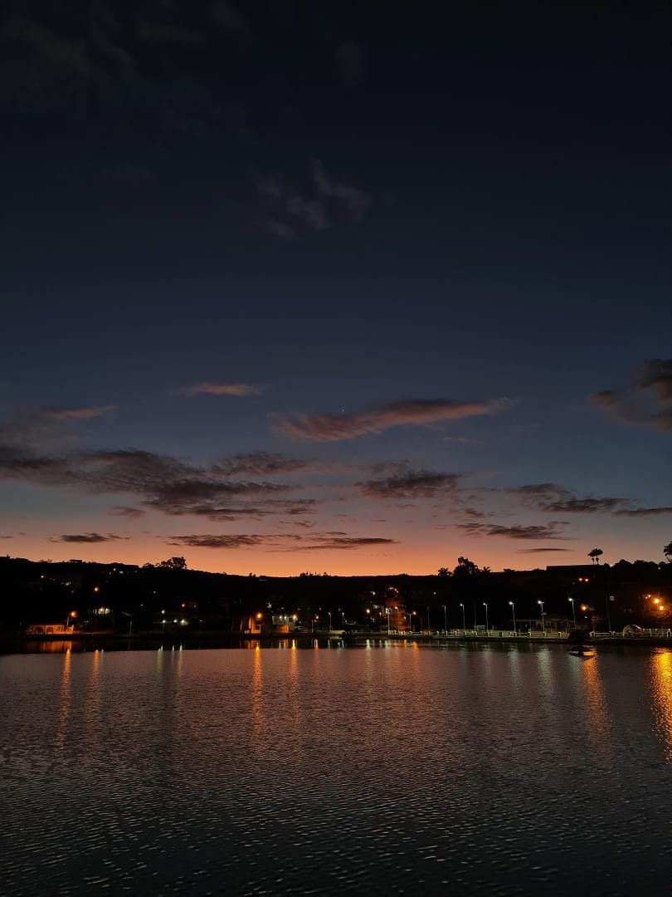
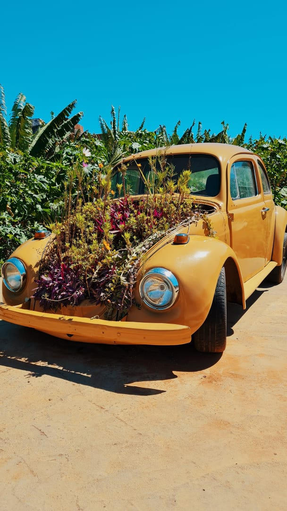
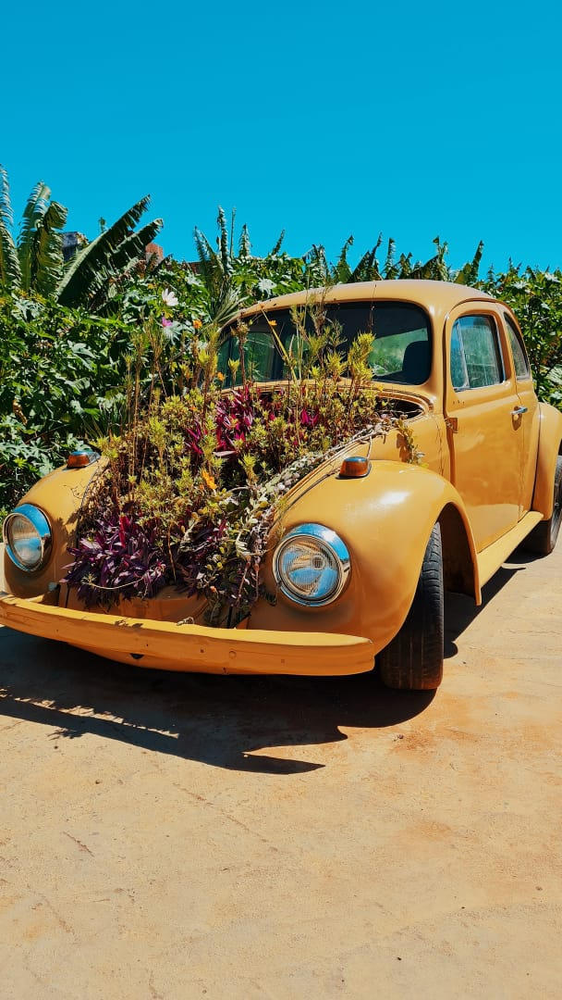

Um dos meus hobbies favoritos sempre foi jogos de videogame, eu sempre gostei de jogos de variados estilos como League of Legends, Counter Strike, Fifa...
Esse é o meu perfil na Steam:
Outra coisa que eu faço pra passar o tempo é escutar músicas, afinal quem não gosta de uma boa música? Essa é a minha playlist no Spotify:
Outro hobbie que eu adoro é a fotografia, principalmente quando viajo, essas são umas fotos que eu tirei em uma viagem para Triunfo
 
